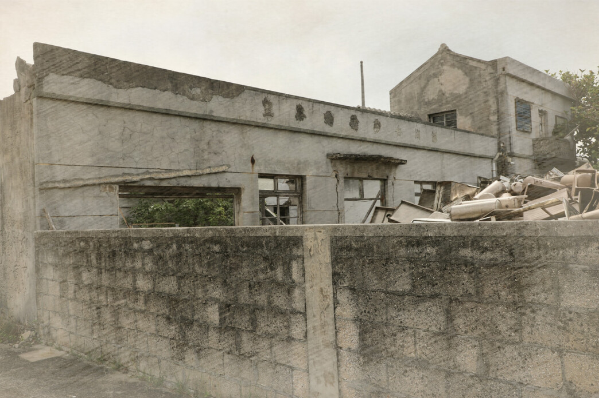
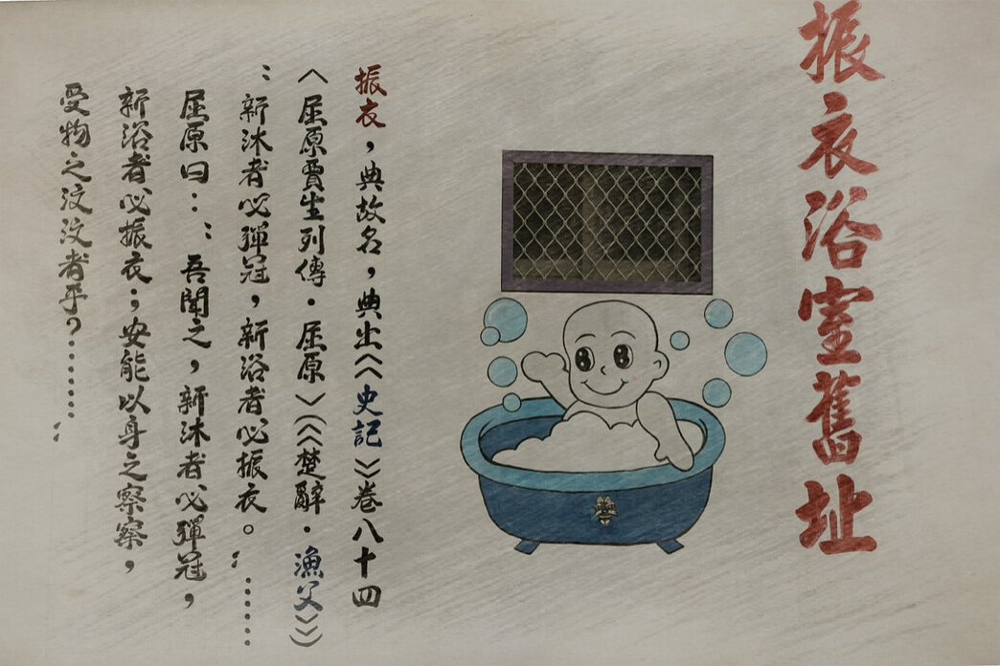
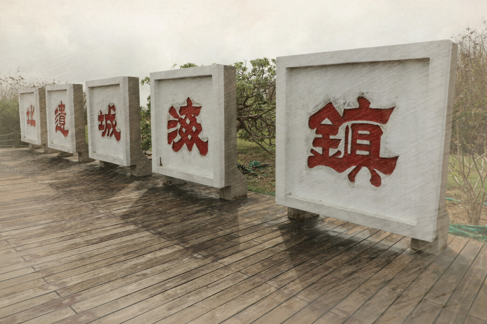

首頁
簡介
觀光影片
熱門景點
在地美食
在地故事
English
熱門景點及所在位置
Hot Spots & Location
海堤公園
海堤OK公園位在203縣道旁，原本如山的蚵殼經公所清除後，使用面積更為廣闊，加以改善成「愛情公園」 作為民眾新打卡點。
五營神兵
澎湖各廟宇的主神均在其轄區周圍安置，營頭派遣神兵把守鎮壓邪魔鬼怪 並保祐闔境平安。
郭家賜福
來澎湖品嘗海鮮一直都是指標，越是新鮮的海產越能夠吸引人，郭家賜福以淨海養殖老實牡蠣，保障每一批牡蠣都是最新鮮的。
德馨家
屬於澎湖重要歷史建築，古厝的美景不能被忽略，吳旋派巴洛克式三合院 是講美吳姓的重要據點
海中崗哨
近年流行各式的海中央景點，鄰近澎湖永安橋與講美漁港，海中央的講美小屋海中崗哨，成為旅人好奇與探索的秘境。
回家炸粿
前往天堂路的超人氣炸粿蚵嗲，海產內容鮮度十足且香酥口感，生意好到 警察都來抓違規停車，是到澎湖旅遊 不容錯過的美食。
微姑家
澎湖的模範媽媽，微姑的善美與大愛 如同樹一般，堅韌與茁壯，為了尊敬她而稱她為微姑，希望後人也能仰望微姑之精神。
龍德宮
初建於康熙50年（1711），是澎湖唯一 祀奉玉皇公主之廟宇，至今已將近有 300年的歷史。
農圃
立碑於明治41年（1908），內容撰述 講美村人陳長桂，為人溫厚熱情， 能通時務，經營農商業且為公益捐款。

軍中樂園
「831」不是金馬前線的權利！在1950-1970年之間，澎湖軍中特約茶室在各鄉市如雨後春筍般興起，時代變遷，澎湖僅存沁樂園公娼館，講美等地的特約茶室只剩遺跡。 1949年後國軍轉進台澎金馬，當時為解決眾多官兵的生理需求。馬祖與金門成立軍中特約茶室後，澎湖與台灣本島也陸續開張營業。

公共澡堂
茶室的空間格局包括接待大廳、侍應室（分成軍官部與士兵部）、廚房、便所（廁所）、浴室，則都還保持完整。

鎮海城遺址
明朝天啟四年（1624年），福建巡撫南居益派遣王夢熊，率兵於鎮海築城防禦荷蘭軍，雖城廓遺址已不復見但名存史料。